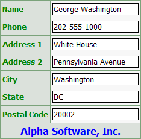

Dialog Component Capabilities
The Dialog Component Builder is a genie that creates dialog components. A dialog component is an HTML form that prompts the user for variables. A dialog component may have as many controls of different types as you require for your application. The only requirement is that the controls have unique names. A button on the form submits the form's contents back to the Application Server. When the form is submitted, the values in the variables are validated. If all validation rules are satisfied, then Alpha Anywhere runs code that you specify in the form's AfterValidate event.
The types of controls that you can place on a grid are:
AdvancedButton - allows you to run a script without submitting the page
Blurb - a static text control that does not have a heading
Calendar - a monthly calendar
Check box - allowing a selection from a list of values
Custom - where you define the data to be displayed and its formatting using Xbasic and HTML
Date picker - a variation on a text box that is available if your grid is updateable
Drop Down Box - a list box that may appear as a list or combo box, and allowing a selection from a list of values, which is often retrieved from a table
Heading - a static text control without a heading that spans the width of the dialog
Hidden - a device for placing hidden variables on a dialog
Image - displaying either embedded or linked images
Label - a read-only control suitable for character, numeric, and date/time data
Link - a hyperlink, which may open another page or select a record to display
Lookup - a variation on a textbox or textarea control that retrieves one or more field values from another grid
Radio button - allowing a selection from a list of values
Tab Control - a control that allows you to selectively display and hide other controls
Text area - similar to a text box, but with multiple lines
Text box - an editable control suitable for character, numeric, and date/time data
You can customize the names of controls and labels associated with them. You can add or remove controls at any time and reorder them on the form.
Changing the Dialog's Appearance
There are many ways to customize the appearance of a dialog component. At the control level, you can set these properties:
Width in characters
In-Line style - HTML style settings that will override the default style sheet
Error style - any HTML style settings that you wish to apply to indicate an error condition
Row label position - above, below, left, or right
Freeform layout - any HTML coding that you wish to place around the control
At the dialog level, you can set these properties:
Style Sheet - select any one of dozens of cascading style sheets
Font Size - shrink or expand the dialog by making the fonts smaller or larger
Row Labels - Hide or display row labels
Error Messages - select where to display error messages
Simple version of Style Sheet - enable or disable a less complex version of the style sheet
Customizable button properties
Button labels - text in any language
In-Line styles - HTML style settings that will override the default style sheet
The normal default layout of a dialog component places controls and their labels in a vertical column.

There are a number of layout customizations possible.
Dialog Footer - The picture above illustrates a dialog footer, which is static text that appears at the bottom of the dialog and spans its width.
Freeform Layout - In this case you design the component's HTML and place fields and buttons where you want them.
Change the number of columns - Instead of displaying controls in a single column format, you can spread them over any number of columns. This picture shows the same dialog as above, but with 2 layout columns. Picture
{kind=link}

If you change the number of layout columns, there are several additional options that you may use to position controls.
Breaks - a break before or after a control forces the start of a new row
Frames - a frame groups fields together inside a box, which may occupy one or more columns
Colspan - the colspan value specifies the number of layout columns a control should use
Column Spacers - a column spacer inserts a blank column after a control
Row Spacers - a row spacer inserts a blank row after a control
Merges - a merge groups adjacent controls together, so that they use a single common heading label
A significant capability of the dialog component is the ability to validate the input to a text box or the selection from a list box, radio button, or check box. A field can:
require input.
accept or reject letters, digits, white space characters, or special characters.
use a mask or a regular expression to format input.
have a minimum and/or maximum length.
use an Xbasic expression to validate its contents.
Error conditions can display custom error messages.
Text box, list box, radio button, and check box controls may have Xbasic
code attached to their on
The dialog component may have Xbasic code attached to its Initialize, Validate, AfterValidate, and Activate events. You can place Xbasic code into five sections.
Initialize event - fires the first time the form is run. The Initialize event is not fired when the form is run the second and subsequent times or when the form is submitted to itself.
Validate event - fires every time the form is submitted. It is the first event that fires when the form is submitted to itself. If the code in the Validate event sets the Has_Error property of any object on the form to .T., Alpha Five re-displays the form so that the user can correct errors, and then re-submit the form.
AfterValidate event - fires after the Validate event, but only if the Validate event code did not set any control's Has_Error property to .T. .
Activate event - fires every time the form is run and after the Validate and AfterValidate events.
Once you have placed at least one control on the dialog, you may click Preview to see your work in the pane at the bottom of the screen. This view disables hyperlinks. If you want to run the dialog and test Xbasic code, display the Live Preview tab. To run the dialog in your web browser, click Browser.
The HTML tab of the Web Component Builder displays the HTML that you are generating in the background. The Xbasic tab of the Web Component Builder displays the Xbasic data structures that you are generating in the background. You cannot directly edit the HTML or Xbasic code, although you can copy it to use in other places.
If you open a A5W page in the HTML Editor, you may now insert this dialog component into the page and preview it in your web browser.
See Also
Creating Dialog Components, Setting Dialog Properties, Setting Dialog Control Properties
Limitations
Web publishing applications only.